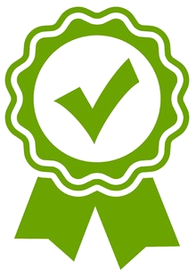

O mnie
Jestem programistą skupionym na Java, lecz nie ograniczam się tylko do jednego języka.
Obecnie poszukuje ciekawych projektów.
Po ukończeniu studiów geodezyjnych postanowiłem pozostać z moją pasją do programowania
poprzez samokształcenie.
Poniżej przedstawiam moje obszary skupienia na 2019 roku.
CodersLab
Java Developer: Web
Ukończenie kursu CodersLab i kontynuacja nauki poprzez samokształcenie oraz doskonalenie nabytych umiejętności i wiedzy podczas kursu.

Projecty
CRUD REST API Service
Stworzenie aplikacji koncentrujacej się na CRUD i API.
FreeCodeCamp
Responsive Web Design Certification
Rozpoczęcie internetowego kursy FreeCodeCamp oraz stworzenie projektu końcowego.